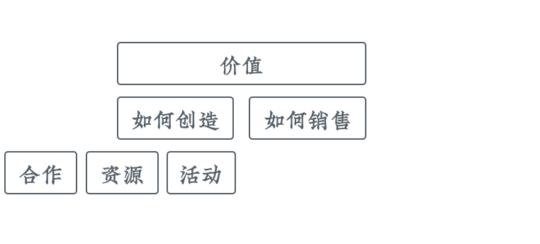
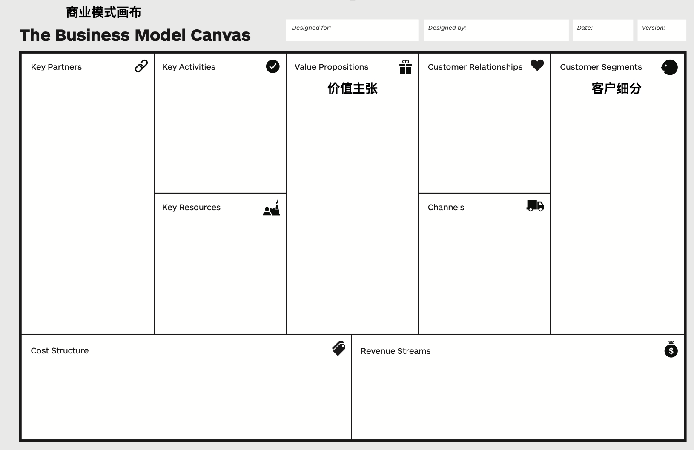
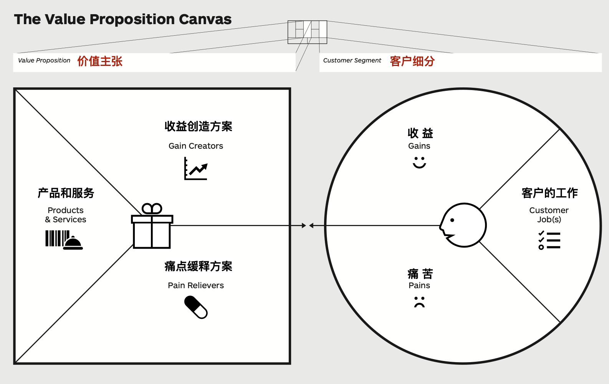

商业模式画布
前边我们说到，在精益创业方法论里，有两个非常重要的假设，第一个就是「价值创建假设」。
因为不管是向用户销售软件还是在线服务，它本质上来讲其实是一种价值交换。也就是我们「给什么样的客户」「提供什么样的服务」，然后「收多少钱」的一个简单逻辑。
而围绕着价值的定义、创造和传播，我们可以使用一个非常棒的工具来描述它，这个工具叫做商业模式画布。商业模式听起来是一个很高大上的名词，但它具体化以后就很容易理解。
商业模式画布是以价值为中心的一张图，让我们把所有和价值相关的内容都放到上面，从而可以一目了然地纵观全局。
那下面，我们就来看一下商业模式画布是怎么围绕核心价值，一层一层建立起来的。
价值的定义
商业模式的核心，就是「价值主张」。也就是刚刚提过的，对谁，提供什么样的服务，收多少钱。

创造价值
定义好价值以后，我们会从两方面来考虑它。首先是如何把这个价值给创造出来；然后是如何把这个价值给销售出去。
在价值创造这边，我们可以把它细化为三个方面。

包括：
- 我们需要进行什么样的活动？这里的「活动」是「activity」，其实也可以叫做动作。
- 我们需要什么样的资源？
- 我们需要进行哪些合作？
销售价值
在价值销售这边呢，我们就要思考：

- 我们的价值主张定义得够不够好？
- 我们的渠道通路是不是足够的通畅，到达是不是有效？
- 我们的客户关系要怎么来建立和维系？
其实价值主张应该放到价值定义里边，但因为价值主张它直接涉及到了客户细分，又直接影响到了销售，所以我暂时把它放到销售这一边。
分层结构
按前面的描述，我们比较容易把商业模式画布当成一张图。但事实上，它其实更类似于Photoshop 软件中 的 PSD 文件，是分层的。其中每一层针对一个细分人群。
这主要是因为我们提出的价值主张，很难同时覆盖多个人群。同样的价值主张对一类人来讲可能是非常棒的东西；而对于另一类人来讲可能就毫无用处。
所以，我们提出价值主张之前，就需要进行客户细分，把我们的客户分成几类典型的角色，再针对每一类角色来提出更为具体、更有针对性的价值主张。
画布结构
下面我们就实际来看一下商业模式画布的布局。

在表格的最中间，就是我们的价值主张。在最右边，是客户细分。我们可以用不同颜色的文字，来代表不同的细分客户和针对他们的价值主张。
在价值主张表格的左边，是关于价值创造的区域，有「关键活动」、「关键资源」、「关键合作伙伴」；在价值主张表格的右边，是关于价值销售的区域，除了我们刚才已经说过的「客户细分」，还包含了「客户关系」和「渠道通路」。
表格的最下边一行，分成了两部分，左边是「成本构成」，右边是「收入来源」，它们都是根据我们上面的表格来进行计算的。一旦计算完，我们就可以预先知道这个项目做下来能不能挣钱，或者说挣钱的可能性有多大。
价值主张画布
在整个商业模式画布里边，「价值主张」和「客户细分」是最为基础、也最为关键的地方。如果价值主张没定义好，其他的做得再好也没有用。
所以，为了更好地进行价值主张设计，我们还有一张专门针对这两个部分的、更为详尽的「价值主张画布」。

上边这张图就是「价值主张画布」。它左边是「价值主张」，右边是「客户细分」。
客户细分
在「客户细分」这里，它更为详尽地描述了客户的情况。
这个圆分为三部分，最右侧描述了客户想要进行的工作、要完成的业务；下方是他在完成这些工作的时候所感受到的痛苦；上方是在完成工作后可以得到的收益。
价值主张
图左边的正方形就是我们的价值主张。可以看到，价值主张是针对需求提供的解决方案。比如：针对痛点，我们会提供「痛点缓释方案」，让客户在完成工作的过程中，没有那么痛苦；针对收益，提出「收益创造方案」，让收益变得更多。
在这两个方案的基础上，我们通过产品和服务的形式来将其落地，也就是正方形的左侧部分。
契合
大家可以注意到，在「客户细分」的圆形和「价值主张」的方形中间，有两个正对着的箭头，它表示「价值主张」和「客户细分」之间要达成契合。
因为我们会把整个客户群体分成多个细分群体，所以价值主张画布，它其实也是多份的。针对每一个细分的客户群体，都会有一张自己的价值主张画布。